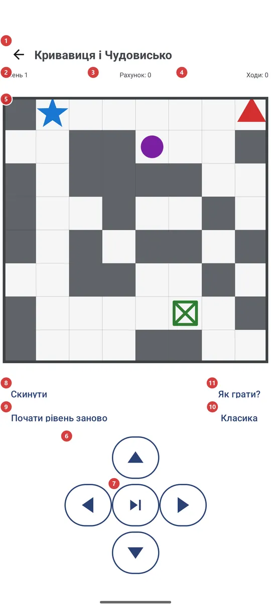
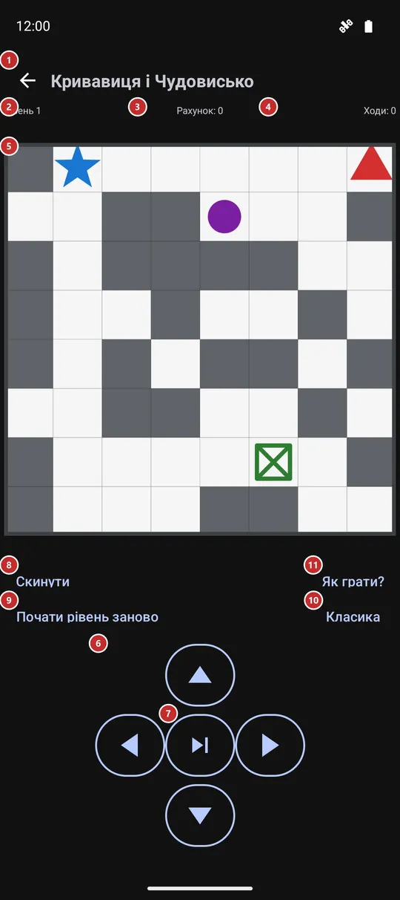

Кривавиця і Чудовисько
Для чого цей екран
Невелика покрокова головоломка на клітинковому полі. Проведіть синє Чудовисько до зеленого виходу, доки червона Кривавиця та її фіолетові помічниці не загнали вас у кут: ви ходите на одну клітинку, після кожного ходу рухаються вороги, а кожен наступний рівень - це більше поле.


Порядок дій
- Відкрийте гру з меню програм, із панелі програм, із лаунчера або віджетом на домашньому екрані. Після встановлення вона вимкнена, тому спершу ввімкніть «Мінігра» в «Налаштуваннях», на вкладці «Управління», у групі «Додаткові програми та сценарії». Гра сама зберігається і продовжується з того місця, де ви зупинилися.
- Уперше натисніть «Як грати?» 11: на окремому екрані показано, що означає кожен колір на полі, і описано правила.
- Ходіть на одну клітинку за хід по полю 5: проведіть пальцем будь-де, торкніться поля з того боку від Чудовиська, куди хочете піти, натисніть трикутники 6 або скористайтеся клавіатурою чи D-pad. Після кожного ходу рухаються й вороги.
- Штовхайте сірі стіни у вільні клітинки, щоб розчистити шлях. Якщо ворог опиняється на вашій клітинці або поруч, рівень програно.
- «Наступний хід» 7 пропускає ваш крок, а вороги все одно ходять: так роблять, коли стояти на місці безпечніше, ніж іти.
- Вихід приносить +1000, і наступний рівень починається сам за секунду або одразу за «Наступний рівень» 8. «Рівень» 2, «Рахунок» 3 і «Ходи» 4 ведуть облік над полем.
- Якщо рівень не вдався, «Почати рівень заново» 9 запускає його знову на новому полі за 500 очок, а «Скинути» 8 відкидає всю гру й починає з рівня 1. «Режим гри» 10 змінює вигляд поля.
Елементи
Верхній рядок і лічильники
1НазадВиходить із гри туди, звідки ви прийшли.
Гра зберігається після кожного ходу, тому вихід не втрачає ваше місце: коли ви відкриєте гру знову, вона продовжиться з тим самим рівнем, рахунком і ходами. Кнопка «Назад» на пристрої робить те саме.
- Сполучення клавіш
- Esc
2РівеньПоказує, на якому ви рівні.
Ви починаєте з рівня 1. Із зростанням рівня поле збільшується - спершу 8 на 8 клітинок, потім на клітинку більше щотретього рівня, до 20 на 20 - і на ньому з'являється більше фіолетових ворогів.
3РахунокВаші очки: ходи коштують, поштовхи й вихід приносять.
Кожен хід коштує 10 очок, зокрема й пропущений. Поштовх стіни дає +10, розчавлена фіолетова помічниця +50, а вихід +1000. Рахунок ніколи не опускається нижче нуля. Початок рівня заново коштує 500 очок.
4ХодиСкільки ходів ви зробили в цій грі.
Зараховуються і крок, і пропущений хід. Число росте від рівня до рівня й обнуляється, лише коли ви скидаєте гру.
Поле і ходи
5Ігрове полеІгрове поле: Чудовисько, вихід, вороги та стіни.
Синій - Чудовисько, яким ви керуєте, зелений - вихід, червона - Кривавиця, що йде за вами, фіолетові - її помічниці, які блукають випадково, сірі блоки - стіни, які можна штовхати, а товсту рамку перетнути не можна. Свайп у будь-який бік або дотик вище, нижче чи збоку від Чудовиська зсувають його на одну клітинку в цей бік; дотик точно по Чудовиську нічого не робить. Коли вас спіймали, лінія з'єднує вас із ворогом і з'являється коротке повідомлення.
6Кнопки-трикутникиЧотири кнопки рухають Чудовисько на одну клітинку вгору, вниз, ліворуч або праворуч.
Вони роблять те саме, що свайп чи дотик до поля, і стануть у пригоді, якщо вам зручніші кнопки або ви граєте однією рукою. Хід у рамку або в стіну, яку не можна штовхнути, відхиляється і нічого не коштує. Працює й клавіатура: стрілки, W A S D або цифровий блок.
- Сполучення клавіш
- Arrow keys / W, A, S, D / Numpad 8, 4, 2, 6
7Наступний хідДає ворогам ходити, поки Чудовисько стоїть на місці.
Це зараховується як хід і коштує 10 очок, як крок. Користуйтеся, коли будь-який крок приведе вас до ворога, а чекати безпечніше.
Дії в грі
8СкинутиЗапускає наступний крок гри: нову гру, наступний рівень або повтор після поразки.
Напис залежить від ситуації. Поки ви граєте, написано «Скинути», і кнопка починає зовсім нову гру з рівня 1, з нульовими рахунком і ходами, не питаючи. Після виходу написано «Наступний рівень», і кнопка переходить на наступне поле. Якщо вас спіймали, написано «Почати рівень заново», і кнопка пробує той самий рівень ще раз на новому полі.
- Скасування
- «Скинути» викидає рівень, рахунок і ходи гри, що триває, і повернути їх не можна - лише почати нову гру з рівня 1. «Почати рівень заново» після поразки коштує 500 очок.
- Сполучення клавіш
- Enter / Space / D-pad center
9Почати рівень зановоЗапускає поточний рівень заново на новому полі, якщо ви застрягли.
Номер рівня лишається, поле створюється знову, а ціна така сама, як за поразку: 500 очок, рахунок не падає нижче нуля. Кнопку видно лише поки триває рівень; після поразки її назва переходить до головної кнопки, і вона робить те саме.
- Скасування
- Поточне поле та 500 очок втрачаються, а попереднє поле не повернути.
- Сполучення клавіш
- R
10Режим гриЗмінює вигляд поля: «Класика», «Кривавиця» або «На контрасті».
На кнопці написано назву поточного режиму. Натисніть її, щоб відкрити список «Режим гри» і вибрати інший. «Класика» малює кольорові кульки, «Кривавиця» - фігури: чоловіка, жінку з автоматом, жінок із ножами, двері, а «На контрасті» використовує суцільні плитки в класичних кольорах. Змінюється лише вигляд: правила, ваша позиція та рахунок залишаються колишніми. Вибір запам'ятовується.
11Як грати?Відкриває власний екран допомоги гри з легендою та правилами.
Екран називається «Як грати» і має власну кнопку «Назад». Він розповідає про мету, показує, що означає кожен колір чи фігура на полі (це залежить від вибраного режиму), і перелічує правила та рахунок. Закрийте його, щоб повернутися в гру точно туди, де ви були.